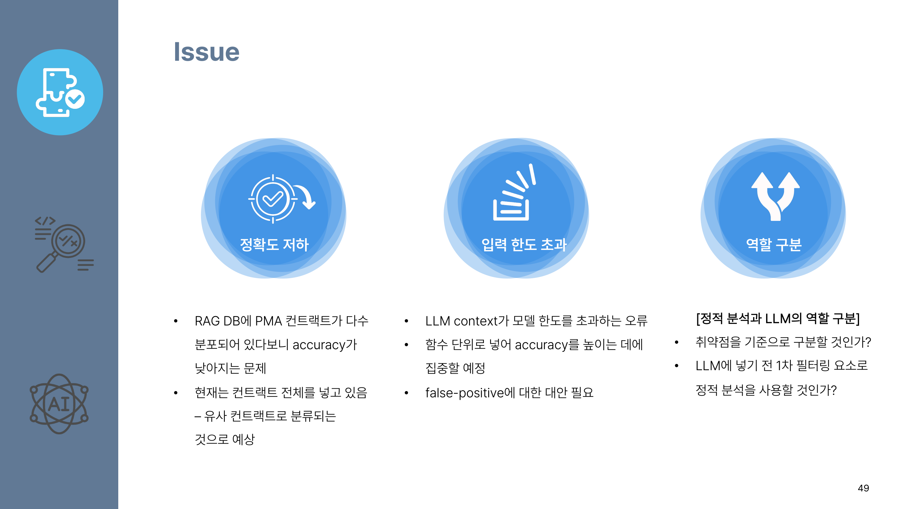
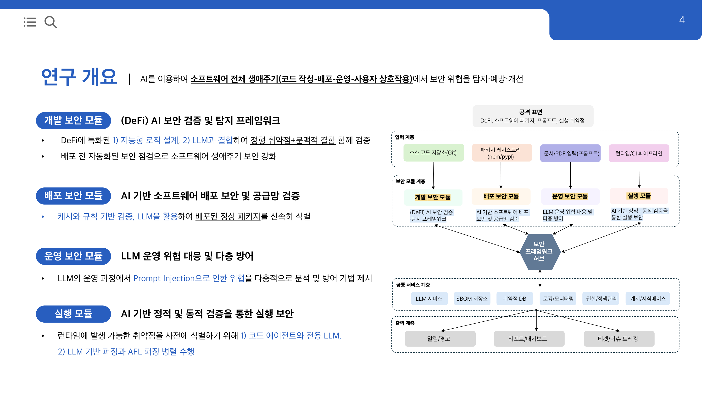
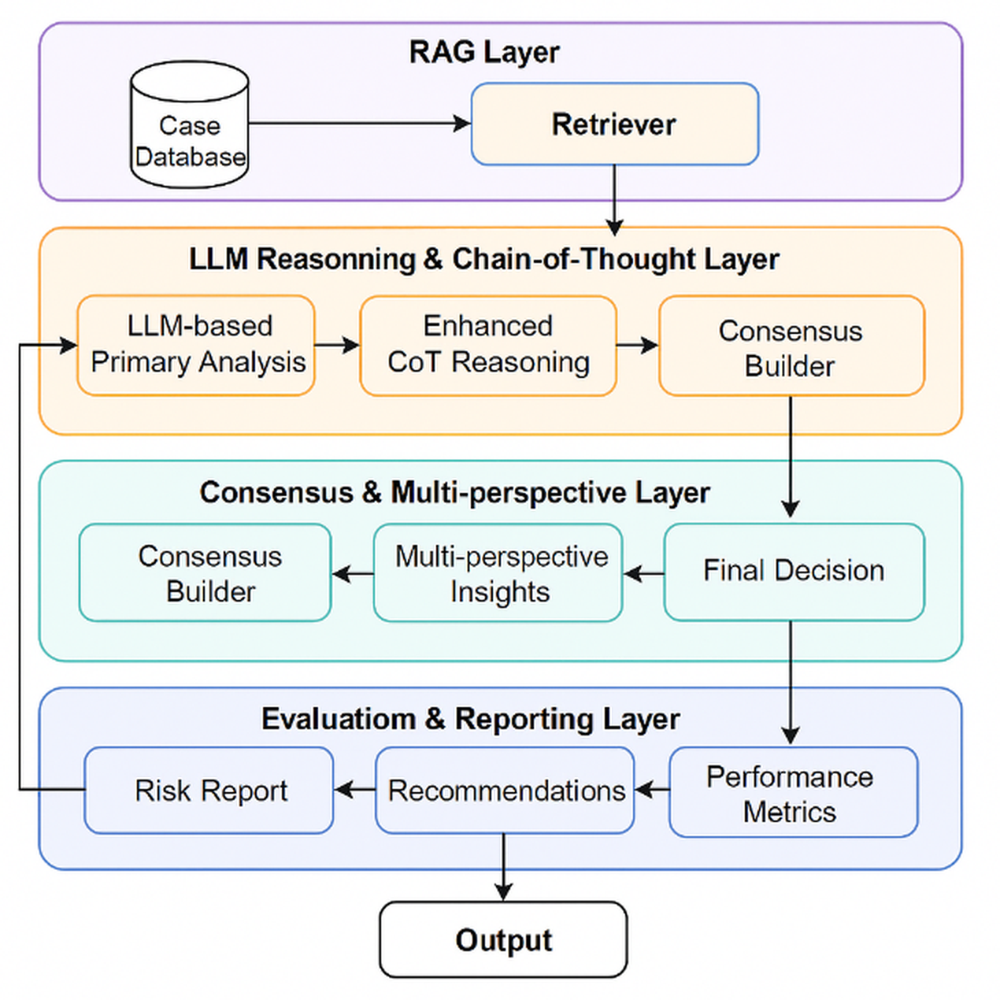
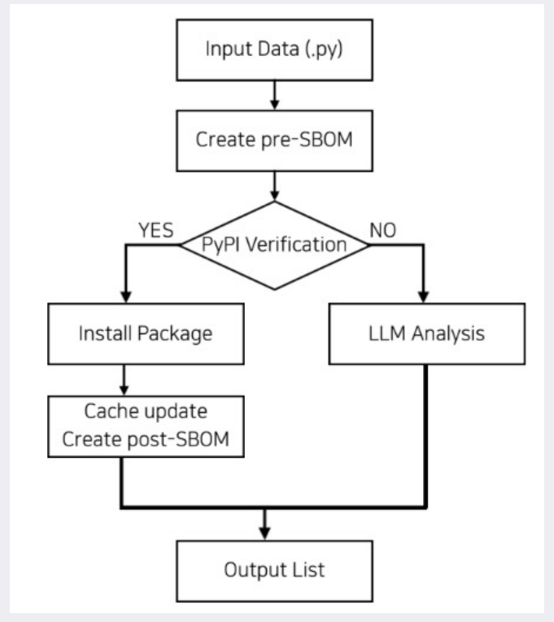
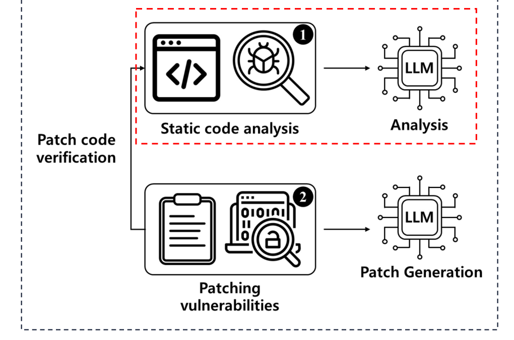
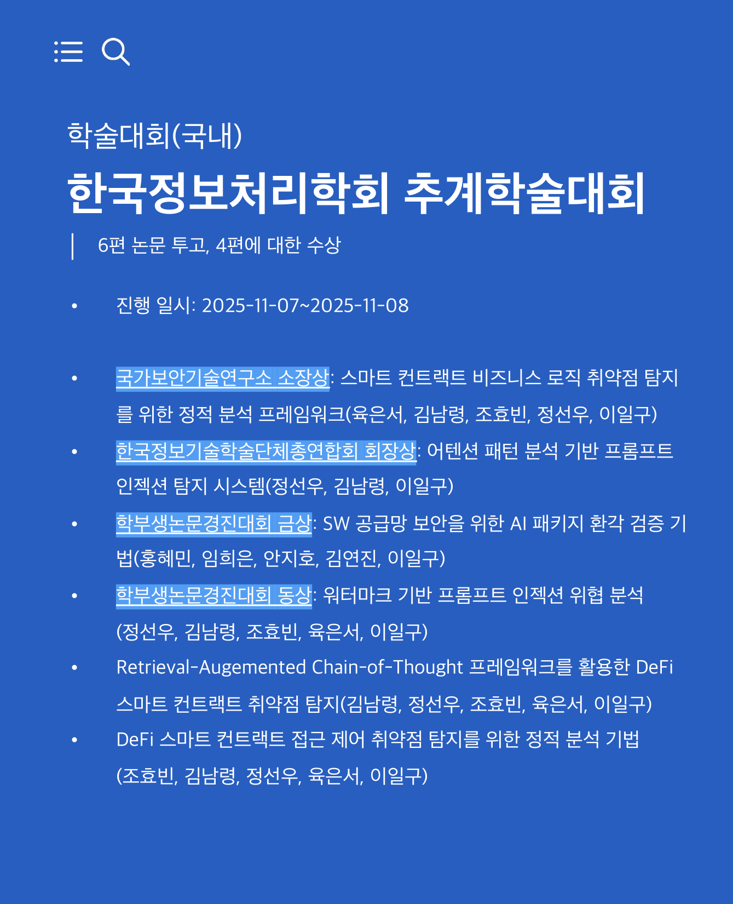
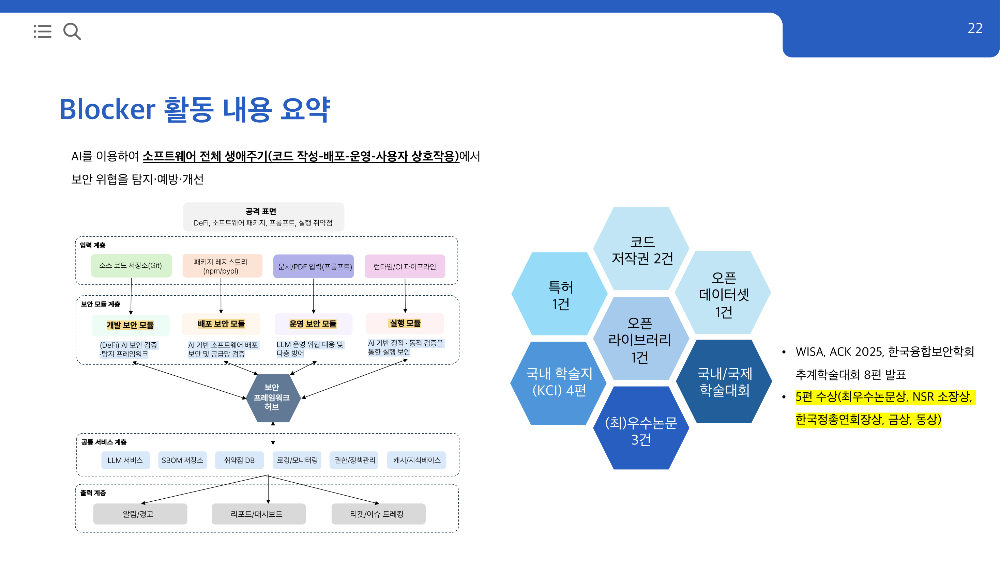

내용
대학이 다른 10명이 6개월 안에 검증 가능한 연구 결과를 내야 했습니다.
- 초기 계획
- 탈중앙 금융(DeFi) 취약점 전체를 정적 분석과 LLM으로 탐지하려 해 범위가 넓었습니다.
- 중간 점검
- 계약 코드 전체를 LLM에 넣자 입력 한도를 넘었고 탐지 정확도도 낮았습니다.

Leadership / AI Security Research
ICT Convergence Security Crew 2nd
4개 대학 10명의 AI 보안 연구팀을 이끌어 학술대회 발표 8편을 완성했습니다.
소프트웨어 개발, 배포, 운영, 실행 단계별로 AI 보안 연구 네 갈래를 진행했습니다.
크루장으로 전체를 총괄하고 DeFi 취약점 탐지와 LLM 보안 두 팀의 팀장을 맡았습니다.
학술대회에 8편을 발표해 5편이 수상했고 ICT융합보안 우수크루상을 받았습니다.
성신 6, 서울여 2, 덕성 1, 한라 1명
WISA 1, ACK 6, 융합보안학회 1편
소장상, 회장상, 최우수, 금상, 동상
1편 게재 승인, 3편 투고 준비
Solc-Parser, Coolock
대학이 다른 10명이 6개월 안에 검증 가능한 연구 결과를 내야 했습니다.

연구 주제를 소프트웨어의 개발, 배포, 운영, 실행 단계별로 나누고 단계마다 팀을 구성했습니다.

DeFi 스마트 컨트랙트 취약점 탐지
탈중앙 금융(DeFi) 계약에서 반복되는 해킹 사고를 배포 전에 걸러내는 것이 목표였습니다. 정적 분석 도구는 알려진 패턴을 빠르게 찾지만 자금 흐름의 의도까지는 읽지 못하고, 계약 전체를 LLM에 넣으면 입력 한도와 비용이 걸렸습니다.
검색으로 근거를 붙이고 단계별로 추론하게 하는 RAG-CoT 방식과, 함수 단위로 흐름과 권한을 따지는 다계층 정적 분석 두 갈래로 나눴습니다. 두 연구의 팀장을 맡아 탐지 기준과 비교 대상을 정했습니다.
RAG-CoT는 선행 연구와 GPT 단독 호출보다 정확도가 높았고 평균 지연 시간과 비용은 각각 약 28%와 38% 줄었습니다. 접근 제어 정적 분석은 사고 20건 중 19건을 찾았고 동적 분석보다 약 75% 빨랐습니다.


AI가 지어낸 패키지 검증
AI가 없는 라이브러리 이름을 지어내면 공격자가 같은 이름으로 악성 패키지를 올려 두고 개발자가 그대로 설치하게 됩니다. 상용 모델도 지어내는 비율이 5%였고 공개 모델은 30%를 넘었습니다.
공식 저장소 조회와 캐시 검증을 먼저 거치고 남는 것만 LLM으로 확인하는 순서를 제안했고, 확인된 패키지는 구성 명세로 남깁니다. 검색만 하는 구조보다 실행 시간이 약 4.2배 빨랐고 외부 API 호출은 약 85% 줄었습니다.

LLM 프롬프트 인젝션 탐지와 방어
서비스에 붙인 LLM은 문서에 숨긴 문장 한 줄로 지시가 바뀔 수 있습니다. 눈에 보이지 않는 텍스트를 넣은 문서도 그대로 읽히기 때문에 입력 단계에서 걸러야 했습니다.
금지어 필터와 어텐션 패턴 분석을 겹쳐 쓰는 탐지와, 워터마크를 방어 수단이자 공격 경로로 함께 보는 분석 두 갈래로 나눴습니다. LLM 보안 팀의 팀장을 맡아 두 연구의 범위를 나누고 팀 구성을 바꿨습니다.
두 방식을 겹친 모델은 한 가지만 쓸 때보다 탐지 정확도가 높았고 지연 시간은 44.6% 짧았습니다. 워터마크 쪽에서는 추출한 텍스트에 감정을 호소하는 문구를 붙여 민감 정보가 나오는 경로를 확인했습니다.


AI가 만든 코드의 취약점 패치
AI가 써 준 코드를 그대로 쓰는 개발이 늘었지만 안전성 검증은 따라가지 못했습니다. 외부 보고서에서는 AI가 만든 코드 표본의 45%가 보안 시험을 통과하지 못했습니다.
정적 분석 결과를 LLM에 다시 넣어 수정안을 만들고, 그 수정안을 검증해 다시 분석하는 되먹임 구조를 제안했습니다. 패치를 넣지 않은 코드와 비교해 취약점의 89%가 고쳐졌고 단순 LLM 패치보다 약 34% 나았습니다.

학술대회에 8편을 발표했고 이 중 5편이 수상했습니다.


외부 기관과 함께하는 과제에서 범위와 검증 기준, 일정을 정리하는 데 쓸 수 있습니다.
연구 운영